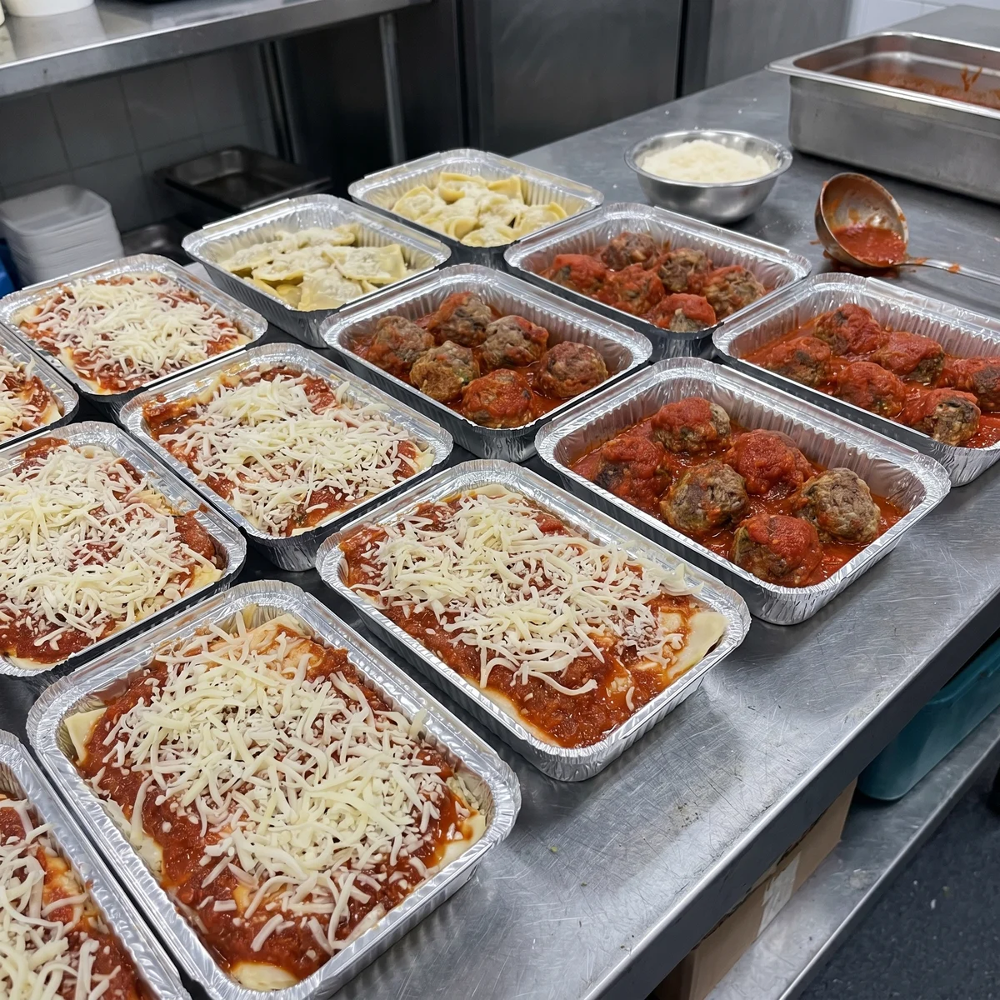
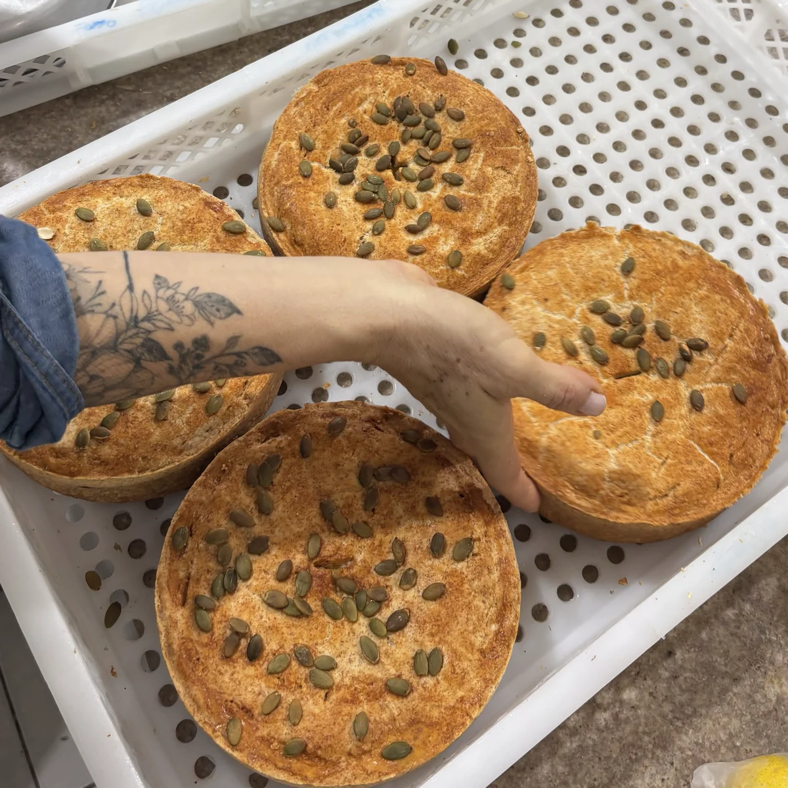
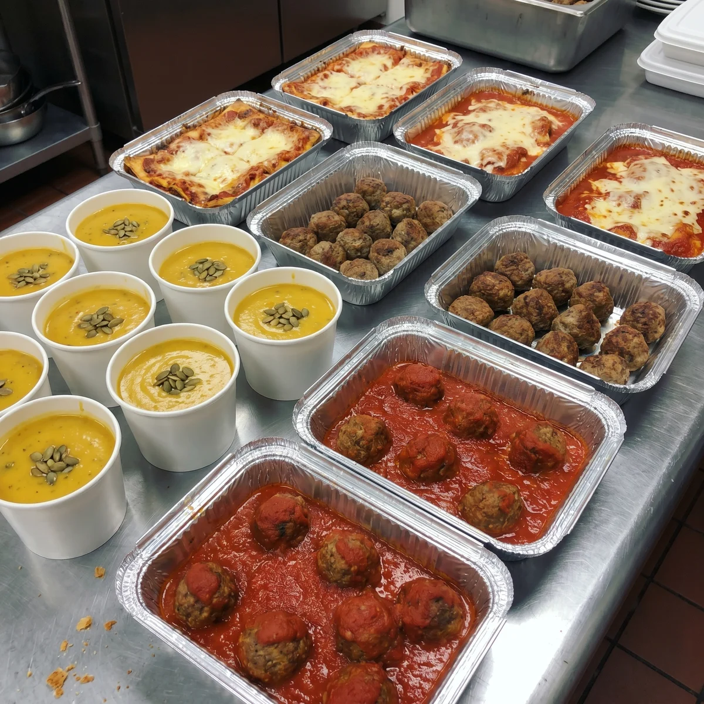
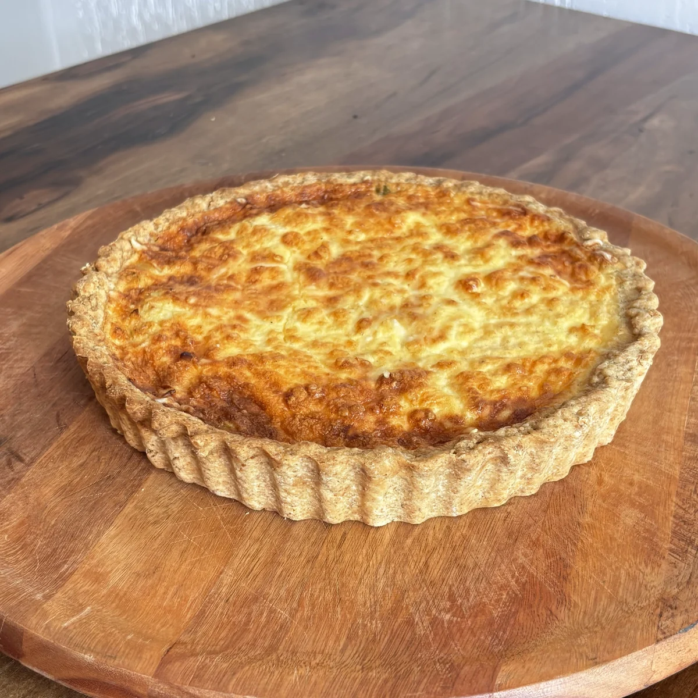
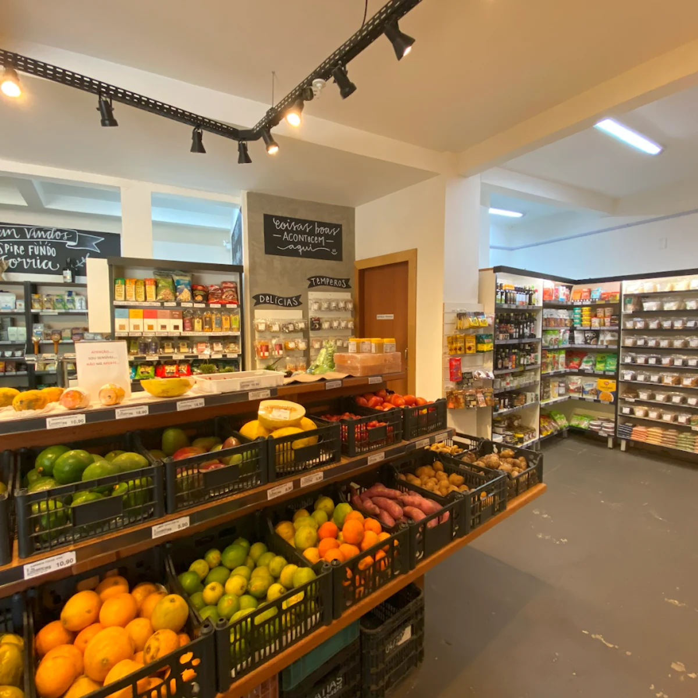
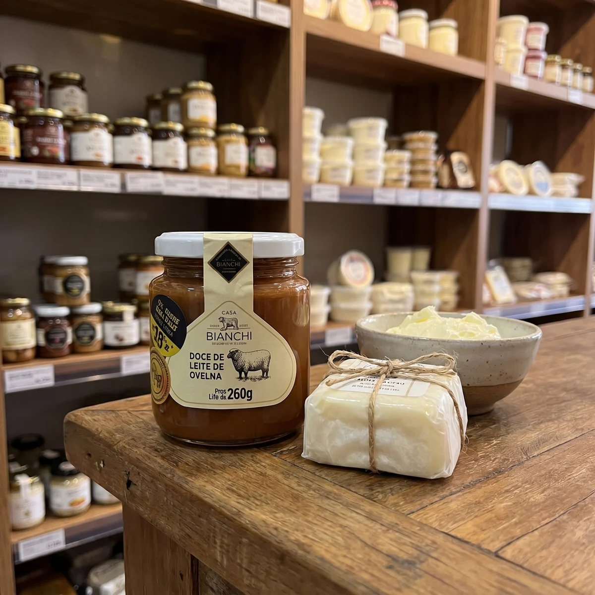
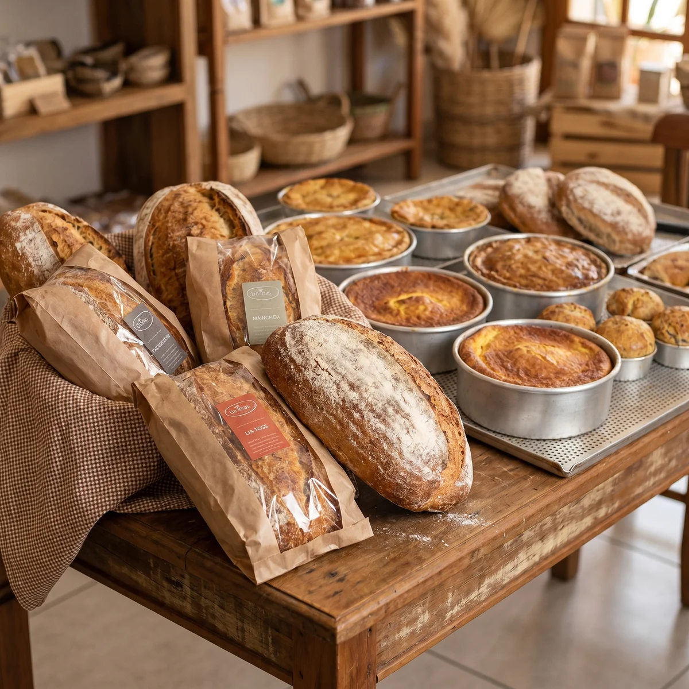
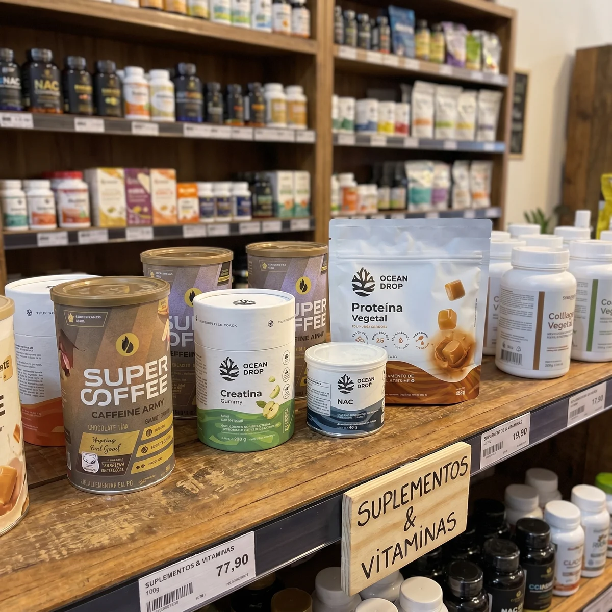
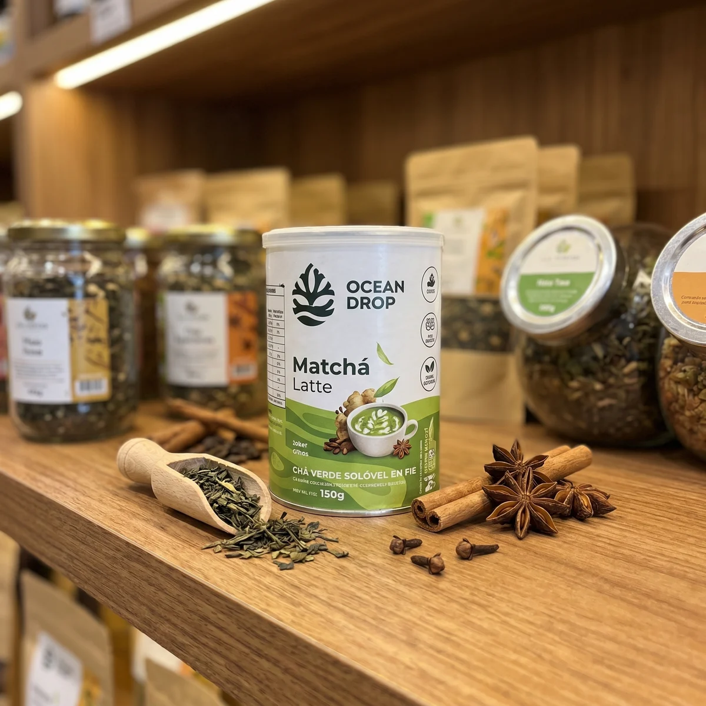

Feito aqui. Com ingrediente rastreável.
Selecionado um a um.
Linha própria artesanal + Emporium orgânico certificado com mais de 6.000 produtos.

Massas Frescas Artesanais
Ravioli, lasanha, tagliatelle, spaghetti — incluindo versões integrais e nosso spaghetti de orapro-nóbis. Feitas à mão e congeladas na hora. O congelamento é nosso único conservante: zero aditivo químico.
Ver produto →
Tortas
Três sabores fixos: torta de frango, torta de carne seca com abóbora e torta de maçã. Em tamanho família e em versões minis — perfeitas para festas e lanches.
Ver produto →
Pratos Prontos Congelados
Sopas, lentilha, feijão, cremes orgânicos, lasanha, strogonoff, carne de panela. Refeições reais de família para o seu dia a dia — sem aditivos, congeladas na hora.
Ver produto →
Bone Broth — Caldo de Ossos
Proteína colágena real. Slow-cooking artesanal, sem aditivos. Para quem cuida do corpo de dentro pra fora.
Ver produto →
Quiches Artesanais
Produção própria, ingredientes orgânicos selecionados. Aquela quiche que parece de confeitaria fina — porque é feita com o mesmo cuidado.
Ver produto →
Homus
Fabricado 3x por semana com grão-de-bico orgânico, tahine e ingredientes selecionados. Sem conservantes. O best-seller da casa.
Ver produto →
Pastas & Molhos Artesanais
Molho de tomate orgânico, molho branco e bolonhesa. Receitas feitas na casa, com ingredientes limpos e zero conservante.
Ver produto →
Sobremesas artesanais
Da nossa cozinha, produção própria: cookie orgânico e broa de milho. As demais sobremesas (brownies, bolos, doces sem açúcar) estão no Emporium, de marcas selecionadas.
Ver produto →Mais de 6.000 produtos selecionados um a um — desde hortifruti orgânico até carnes, peixes selvagens, vinhos orgânicos, produtos para crianças e seções dedicadas a sem glúten, sem lactose e veganos.








